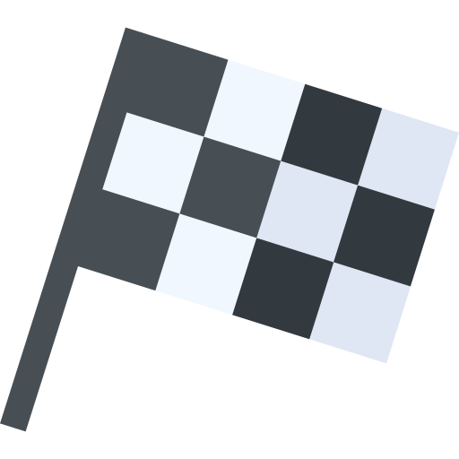
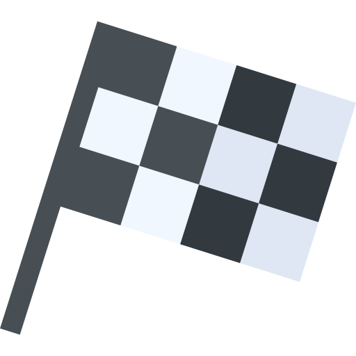
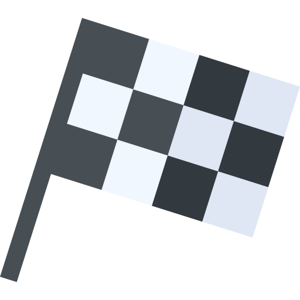
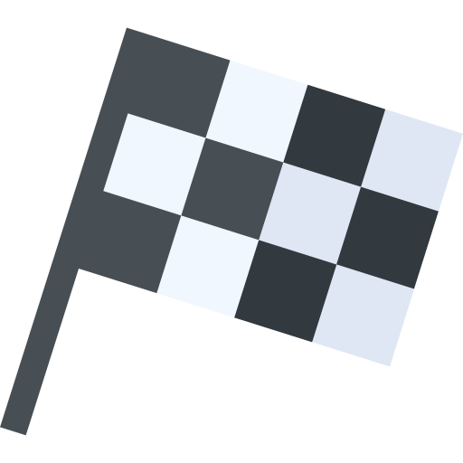

Škola skijanja Kopaonik Darko Pantić - Instruktor skijanja

 



Početnik se prvi put susreće sa skijaškom opremom i potrebno je da se navikne na nju. Kliznost skija, održavanje ravnoteže i prvi oblici kretanja na blagom terenu su izazovi sa kojima se početnik prvi put susreće.
A Nivo obuhvate sledeće postupke, radnje i vještine koje polaznik treba da nauči:
- Obuvanje i zatezanje kopči na ski cipelama, hodanje u ski cipelama (na ravnom, uzbrdo, nizbrdu, stepenište)
- Pakovanje i nošenje skija i štapova, načini nošenja skija u zatvorenom i otvorenom prostoru
- Stavljanje ski cipela u vezove i oslobađanje ski cipela iz vezova
- Korištenje lejzera prilikom ulaska na ski poligon
- Koračanje skijama sa naizmjeničnim korištenjem lijevog i desnog štapa
- Klizanje sa skijama na ravnom korištenjem obadva stapa istovremenom, isto to na blagoj nizbrdici za dobijanje ubrzanja prilikom spusta pravo
- Okretanje oko vrhova, repova i oko svoje ose na ravnom
- Stepenasto penjanje uz padinu
- Spust ravno na blagoj padini u srednjoj skijaškoj poziciji sa paralelnim skijama postavljenim u širinu kukova
- Zaustavljanje u plugu
- Spust ravno na blagoj padini sa kontrolom brzine u prelaznoj poziciji skija ( pica parče,klin, slovo A)
- Korištenje pokretne trake na ski poligonu
- Pojedinačni zaokret u prelaznoj poziciji skija sa prednjačenjem spoljašnje skije u početnoj fazi zaokretanja
Trebamo polaznika inficirati najljepšim virusom na svijetu. Virusom skijanja. To ćemo uspjeti, ako mu damo puno podrške, stručne i pravilne pomoći, suosjećaja za njegove/njene početničke muke.
Skijaška oprema je teška i neudobna. Ski cipele su prava noćna mora za početnike. Nov je osjećaj fiksiranosti skočnog zgloba. Neobično je hodati sa fiksiranim skočnim zglobom, a nogama nam je umjesto naše normalne obuće pancerica. Na to sve novo je i velike poluge koju čine skije.
Kod prvih spustova bez obzira što je padina blaga normalna je pojava strah, kod ženske populacije je on daleko izraženiji.
Stvarno je teško prvih par časova na snijegu. Mnogo je izazova, naporno je. Djeca koja su u procesu vježbanja, koja su aktivna i treniraju, a pogotovu koja kližu ili voze rolere bez problema prolaze ovu prvu fazu.
Polaznik neće odustati, ako je stekao povjerenje u učitelja, ako je učitelj našao pravi način da ga pravilno animira, motiviše i zainteresuje za skijanje.
Stopalo će se naviknuti na ski cipele, a Vi da je skija dio Vas i da ste jedno sa snježnom podlogom i skijom.
U početnoj školi skijanja je opuštanja polaznika i njegovo navikavanje na opremu vrlo važno. Sve sto se radi u grču , radi se grubo i sa velikim utroškom energije. Pokreti u skijanju su ritmični, elegantni i sliveni.
Zamislite kako bi bilo voziti automobil bez amortizera, tako je skijati sa ukočenim koljenima.
Ne možemo bez pravilnog skijaškog stava, a on se vrlo jednostavno formira. Kao i u svakom drugom sportu, potrebno je da malo spustimo težište, tj. savijemo koljena i da se malo nagnemo ka naprijed da bi smo bili na prednjem dijelu stopala. Ne treba ništa da bude prenaglašeno, ukočeno. Stojimo normalno, prirodno i radimo iste takve pokrete. Znači potkoljenica se sa prednje strane blago oslanja na cipelu, blago smo savijeni u zglobu koljena i kuku, i trup blago nagnemo naprijed. Glava je u normalnom položaju. Pogled ravno naprijed. Ruke su blago savijene u laktovima, podignute u visini kukova i širini ramena u vidnom polju. šake su malo otvorene u polje, tako da su krplje od štapova blizu zadnjeg veza na skijama.
Kada je početnik pravilno zauzeo skijaški stav i sigurno se vozi niz padinu, mogućnost kontrole brzine, skretanje i zaustavljanje su sledeći elementi koji mu trebaju da se osjeća bezbjedno i da uživa u skijanju.
Znači u početnoj školi skijanja treba da naučimo polaznika da pravilno stojeći na skijama mogu da kontroliše brzinu, skreće, zaustavlja se na blagim terenima.
Na Kopaoniku je to dječiji vrtić i ski lift Mašinac, a oni koji to savladaju dobijaju A diplomu škole skijanja.
Ko jednom osjeti i inficira se virusom skijanja, uvijek se iznova i iznova vraća bijelim stazama.